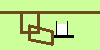
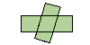
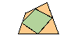
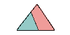
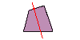

Quadrilaterals and Conservation of Area


Horizontal Machine
Two tapes

Problem about Quadrilateral
Problem about Parallelogram
Conservation of Area
Transformation of a Triangle

Dividing Triangle
Changing Border Line

Transformation of a Pentagon
Dividing a Quadrilateral
Information of Products